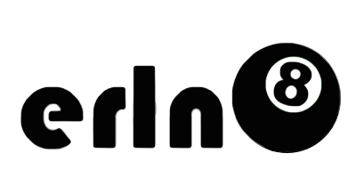

What is erln8?
ernl8 v2 contains several tools that let a developer set custom versions of Erlang, Rebar, and Rebar3 per directory. This allows you to "set and forget" versions of your tools for a project once.
erln8 v2 ships with 3 binaries:
erln8- Erlang version manager, completely rewritten from the ground up.reo- Rebar version manager, uses the same core code that erln8 uses.reo3- Same as reo, but for Rebar3.
Getting started
See the installation and quickstart guide.
Getting help
You can ask questions on the Freenode #erln8 IRC channel.
You can also ask questions on the erln8 mailing list.
FAQ
-
What language is it written in?
- D, it's super fast, easy, and it's not C++ or C.
-
Why isn't it written in Erlang?
- chicken and egg, I never assumed you'd have Erlang built to be used by a tool that builds Erlang.
-
No really, why not \<language X>?
- Erlang is slow for command line tools, I wanted a tool that could be used in a command line prompt.
- I played around with implementing erln8 in the following, all of which weren't a great fit:
- C++
- Racket
- Haskell
- OCaml
- Rust
- Go
-
But D is weird!
- so are kitten elbows
-
What does reo mean?
- Australian slang for "rebar"
-
Does erln8 support MS Windows?
- I don't own Windows, but if you want to submit PR's to support it and build precompiled binaries, I'll all for it.
-
Do you sing at parties?
- No, not really.
Getting help
You can ask questions on the Freenode #erln8 IRC channel.
You can also ask questions on the erln8 mailing list.
© 2015 Dave Parfitt